Preventing Regressions
Fixing Bugs Forever
When fixing a bug, you want to make sure that it doesn’t appear again. The typical tool for this is adding an automated test, also called a regression test. But this is just one tool in our toolbox.
In this article, we’ll look at various techniques for preventing regressions that we use at Remix, such as screenshot tests, linters, commit hooks, approval tests, assertions, bot warnings, and conventions.
Cost vs. Effectiveness
When preventing regressions, there is often a tradeoff between cost and effectiveness. A technique is cheap if:
- it’s quick to write;
- it’s easy for others to understand;
- it’s reliable (no false positives);
- it’s loosely coupled (changing the code doesn’t require changing the detection of bugs);
- it executes quickly, and early on.
A technique is effective if:
- it covers as much as possible (ideally we prevent entire classes of bugs);
- it’s resilient to change (changing the code doesn’t affect us detecting the bug; it doesn’t lead to false negatives);
- it points immediately to the problem (no digging around required).
We’ll examine all our techniques in terms of cost and effectiveness. Ideal techniques have both, but as we’ll see, that’s hard to find!
Unit Tests
Let’s start with a traditional technique. A unit test runs a small piece of code in the actual codebase, and then makes some assertions on the result. Here’s an actual example from our codebase:
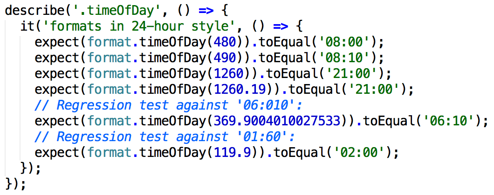
Unit test for a simple function. (format-test.js)
In this case, the cost is fairly low: it’s quick to write, easy to understand, runs quickly, and has never resulted in a false positive (as far as I know). It’s fairly loosely coupled, but would need updating if we change the API of the function, e.g. by changing the input from minutes to hours. In this case, it’s also fairly effective: we can be pretty sure that this piece of code works properly, even when changing it, and it immediately points to the problem when one of the tests fail.
But this is a pretty ideal case. Let’s look at another one, of a React component:
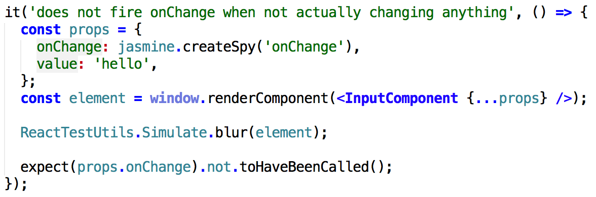
Unit test for a React component. (InputComponent-test.js)
Still looks pretty straightforward, but in this case the test is less resilient to change: if we change the name of “onChange” to, say, “onEdit”, we might forget to update this test, which will make this test do nothing!
The reason is that in React, it is allowed to pass in properties that the component does not actually use. One way to make this test more resilient is disallowing that and instead throwing an error. That is basically an assertion, which we will look at in detail later.
Let’s look at one more, which has several problems:
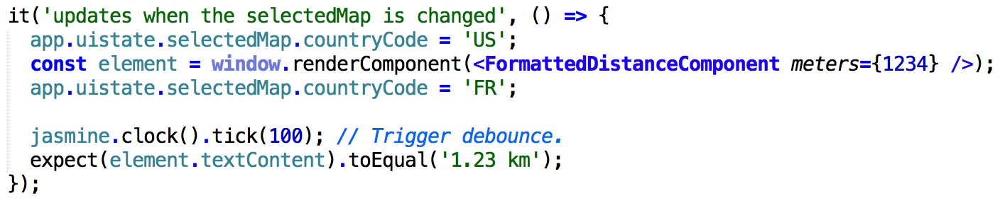
More complicated unit test. (FormattedDistanceComponent-test.js)
In this case the component depends on
global Ampersand state, which makes it hard to change this global state (e.g. by replacing it with Redux). We also have to deal with asynchronicity, as the component debounces changes to selectedMap . All in all, the test is not loosely coupled.
Overall, unit tests are cheapest and most effective for relatively small units which don’t require a world of context. And there is an upper limit to their effectiveness: they only test what you assert—rarely entire classes of bugs.
Screenshot Tests
Let’s look at another technique of preventing bugs from happening: screenshot tests. The way we use them, they are similar to unit tests, in that you run a small piece of code in your actual codebase, and make assertions. In this case, though, the assertions involve taking screenshots of what has rendered in the browser, and comparing that to previous screenshots.
We use Happo to take screenshots of “examples” (rendered components with specific properties) in our component library. This is such an example:
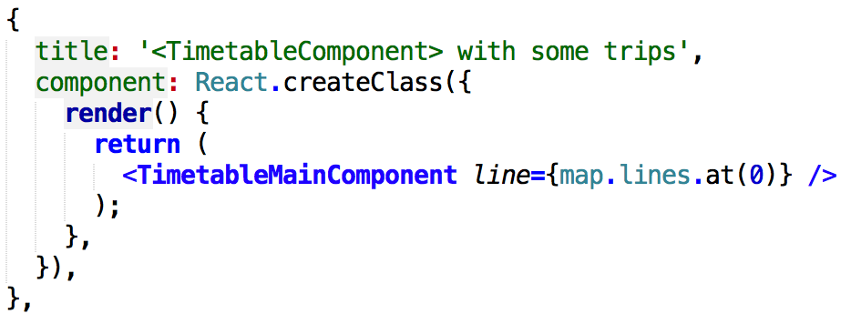
Screenshot tests like this one in Happo are cheap: they are extremely easy to write and understand, and execute quite quickly. (TimetableComponent-examples.js)
Fixing a bug in the timetable causes a bot to comment on the Github Pull Request, like this:
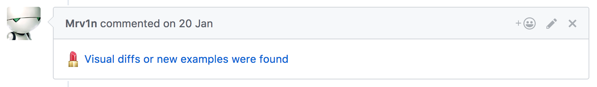
Our bot Mrv1n adds a comment when a screenshot changes.
When clicking on the link, you would see something like this:
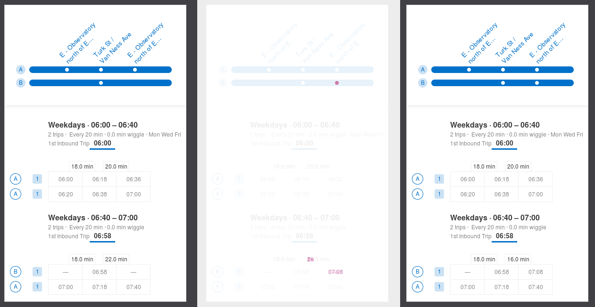
Happo shows how React components change. Before (left), diff (middle), after (right).
Screenshot tests like this are cheap: they are extremely easy to write and understand, and execute quite quickly. They are more loosely coupled to the code than unit tests typically are, as they don’t have to do any prodding into the DOM to make assertions. They are pretty reliable, with false positives only occasionally happening.
But most of all, they are effective: they cover so much at once — rendering logic of all the components in the tree, and even CSS. They point to problems in a direct, visual way. And they are fairly resilient to change, although one has to be careful to create new examples to explicitly cover bugs, otherwise it can become hard to determine what kinds of bugs a particular example is supposed to cover. They also have some side benefits: the examples serve as code documentation, and as a “component library” / “style guide”.
Screenshot tests are so effective at preventing bugs in rendering logic, that we often forgo having unit tests for that at all. We save unit tests for interaction and business logic, such as mutating state.
Approval Tests
Screenshot tests are like a big assertion that covers a lot of things. We can do something similar for text outputs: approval tests, where you store the text output of (for example) a JSON endpoint, and alert the programmer when it changes. Those text outputs are called the golden masters. In the backend we use the Approvals gem, which looks something like this:
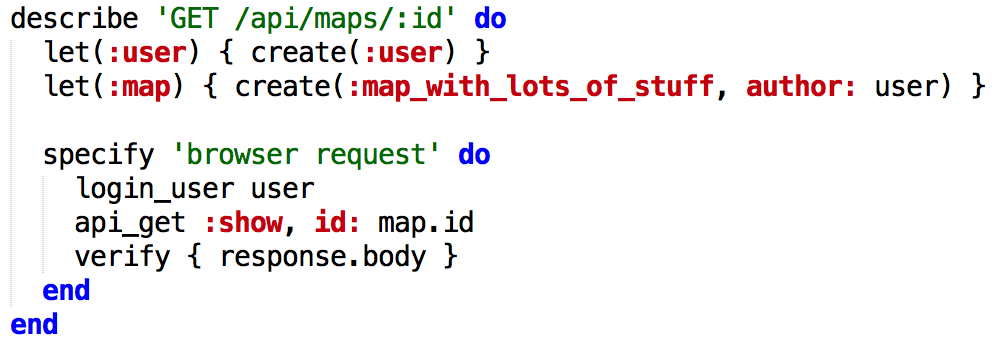
Approval tests, like this one for a JSON endpoint, cover the entire output of an endpoint with ease, especially with good fixture data that covers edge cases. (maps_controller_spec.rb)
Here we use a common fixture throughout the codebase, called map_with_lots_of_stuff, which contains various edge-cases. Because we use it in most of our tests, we know what to expect from it. And adding an edge case is easy: we just update the golden masters!
This is what the golden master for the test above looks like:
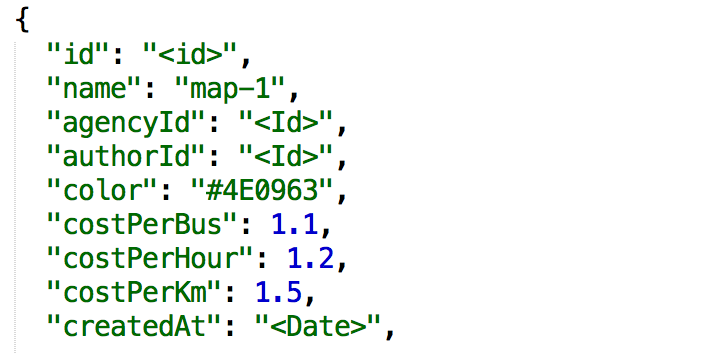
The “golden master” of a JSON endpoint. (get_apimaps_id/browser_request.approved.json)
Since it’s checked into git, we get a nice diff view for free. And again, this is a cheap way of preventing bugs: extremely easy to set up and understand, just like the screenshot tests, and it runs just as fast as other backend tests. It’s fairly effective, too: you can cover the entire output of an endpoint with ease, especially with good fixture data that covers edge cases. When debugging, it gives a good indication of what might be going wrong, although it might be harder to trace down than with a pointed unit test.
It should be noted that approval tests can be flakey (false positives), especially if the order in which results are returned is poorly defined. So we changed our fixture framework to generate predictable IDs, and we changed the application logic to establish a well-defined order. This has the side-benefit that bugs become more reproducible.
Approval tests also have the same downside as screenshot tests: you have to be careful to be explicit about all the edge cases you are testing for. It can be confusing to have one fixture with all the things you want to test for. If that’s the case, just split out some separate tests. It’s cheap and effective, after all!
We’ve also started using Approvals for testing which SQL gets executed during an endpoint call, which can prevent certain performance regressions in a cheap way. Read more in our blog post on the topic, ORM: We Approve.
External APIs Reminders
We also use golden masters to warn programmers when they change an API used by an external service (as opposed to the front-end). Ideally, we would have systems test that boot up multiple services and test their integration; that would be effective. However, that is not always cheap: it can be tricky to write these tests, they are typically slow, and can be flakey.
Instead, our bot posts a comment (using a custom Pronto matcher) when the golden master of an externally used API changes to remind the programmer to manually test the integration. This can be cheaper for APIs that don’t change much and is still quite effective. It looks like this:
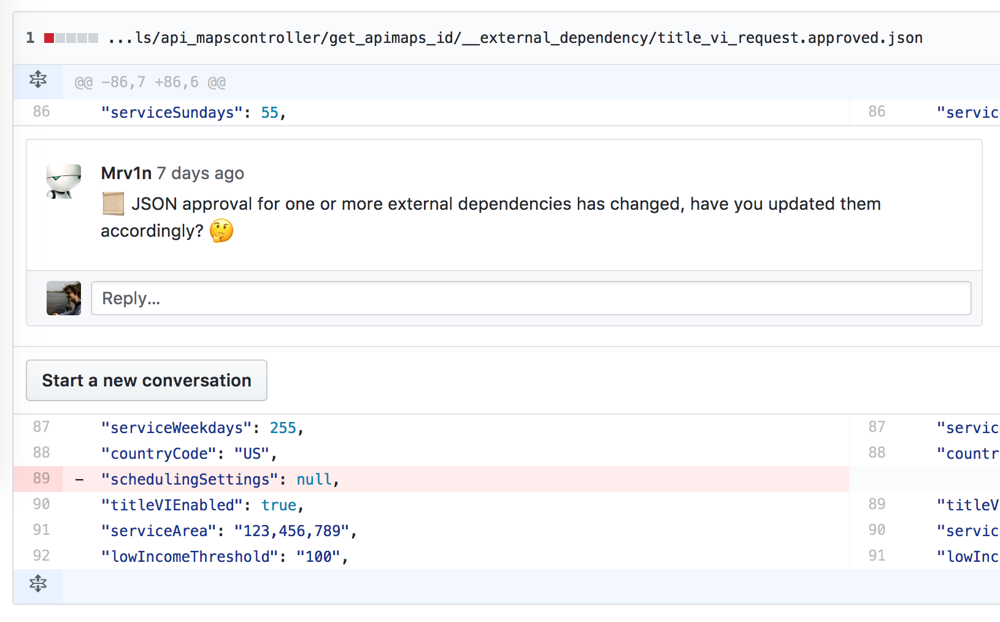
Our bot Mrv1n adds a comment when an external API changes.
Linters
Linters are great to reduce discussion about code style, but they can also prevent bugs. For example, we once used Lodash’s find() method but forgot to actually include it, leading to confusing bugs, as the browser resolved it to window.find(). This was easily solved by adding a linter rule disallowing use of find() as a global method.
In this case, the effectiveness of the linter is limited (it only covers one particular case), but it’s extremely cheap to implement and use, especially because of the feedback cycle that is almost instant, if the programmer has an IDE that automatically runs the linter. If they don’t, it would be caught when committing, using Overcommit (our pre-commit hook tool).
Different Language
More elaborate than linting, is introducing extensions to the language, in order to prevent bugs. For example, Flow adds static type checking to Javascript. One could even go as far as using a different language altogether, such as Elm, which eliminates entire classes of bugs because of how the language is structured.
A classical example of this is C++ vs. Java. Traditionally, programmers had to manage memory carefully, making sure to deallocate memory when the last reference to an object was removed. This could cause memory leaks, a particularly hard kind of bug to track down. In modern languages such as Java—while keeping similar syntax as C++— has automatic memory management. A garbage collector automatically deallocates unused objects, which removes an entire class of bugs.
In our case, we use CSS Modules, which is an extension to the CSS language that adds better scoping of class names. We’ve never had clashing class names ever since.
Assertions
While tests and static checks can prevent a lot of bugs, they can rarely cover all combinations of user interactions. For this we use runtime assertions, which are checks in the application code.
For Ruby, we have written a small helper. In order to have it catch problems as early as possible, it raises an exception in tests and in development mode. When an assertion fails in production, we log an error to Sentry, but let the program continue executing. We use it like this:
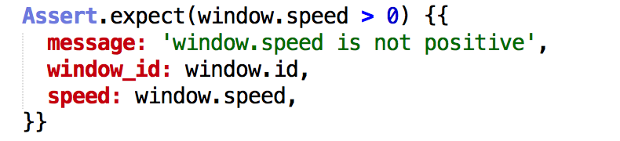
Runtime assertions, like this one in Ruby, are easy to sprinkle throughout your codebase, but effectiveness depends on how actively the team monitors reported errors. (get_new_trip_params.rb)
It is very cheap to sprinkle assertions like this throughout your codebase. It can even serve as additional documentation for the code, by making any pre- and post-conditions explicit. They also have barely any performance overhead.
The effectiveness varies wildly per assertion. In this case, it’s in a file that gets called from many places in the codebase, making it more effective. Also, since assertions are embedded in runtime code, they rarely get out of sync (no false negatives). However, the team needs to be actively monitoring reported errors.
A special case of assertions that we use in the front-end (besides regular assertions), is immutable data. For example, Object.freeze() raises an error when trying to change a “frozen” object.
Data Integrity Checks
Another special case of assertions, data integrity checks make sure that persisted data (in a database) is of a certain form. For this we use several techniques. First, we try to use the most appropriate type for each column. Second, we use database constraints for simple checks. Third, for more complicated checks we have a script that runs queries against a follower database, and notifies us when an assertion fails.
These methods are increasingly expensive and decreasingly effective as they become more and more specific. But like other assertions, they operate on real-world data—full of edge cases—making it more likely to catch bugs with them than with tests.
“How can I prevent this bug from happening again?”
All these techniques are the result of us constantly asking ourselves the question: “How can I prevent this bug from happening again, in the cheapest, most effective way?” This is a more open-ended question than, “Is there a unit test for this,” or, “what is our test coverage percentage?” After all, there are more techniques than unit testing, and many of them are either cheaper, or more effective, or both.
To encourage asking this question, we have the convention to write a “test plan” in every commit. We have even configured Overcommit to remind us of this. These are some actual commits:
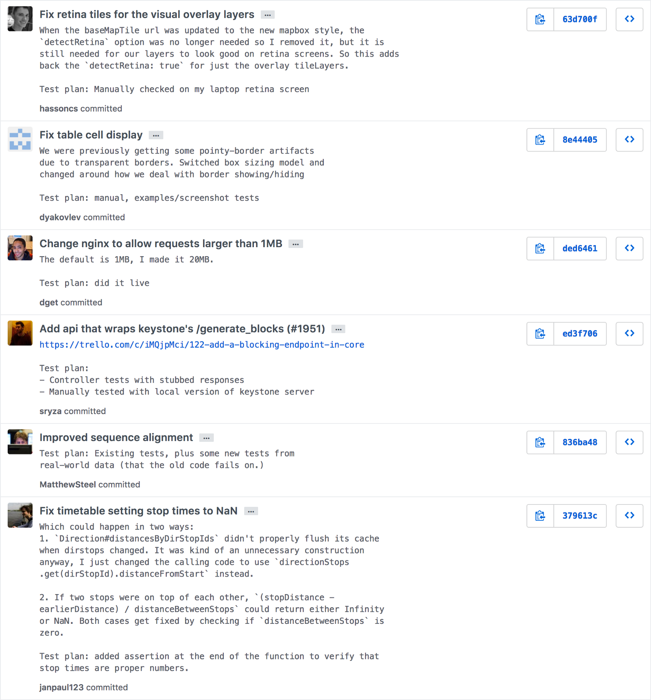
Actual commits from our codebase, showing our “test plan” convention.
Note that the test plan doesn’t always involve writing code. Sometimes just testing something manually is enough, if the cost of automating it outweighs the chance that the bug regresses.
For different types of commits, different test plans are useful. For pure refactors, ideally you don’t need to change your tests. For bug fixes, you want to write how that bug—or similar ones—will be prevented in the future. For new functionality, think about how to guarantee its correctness.
Conclusion
We’ve looked at various techniques of preventing bugs from regressing and a way of evaluating these techniques. In the end, this is only what we came up with, and we are always looking for new ideas!
Most importantly, though, is the mindset. Whenever you fix a bug, think to yourself: how can I prevent this bug from happening again, in the cheapest, most effective way? And then extend this line of thinking to refactors and new functionality, too.